Everything Roku Dev Studio does, in one place. Pick one from the left.
Remote Control
Full D-Pad Control: Navigate menus, select items, go back/home
Media Controls: Play, pause, rewind, fast-forward, volume control
Optional Keyboard Remote: Enable in Settings → General → Roku Remote - Use Keyboard (off by default); arrow keys, Enter, Backspace, Escape, Space work as the remote on the Remote tab or Dev App tab for the open device
Visual Remote Interface: On-screen remote with all buttons
Works Locally & Remotely: Control devices on local network or via remote server
Floating Remote: A draggable mini remote you can pop open on any tab that doesn't already show a full remote (e.g. Query, App Connector)
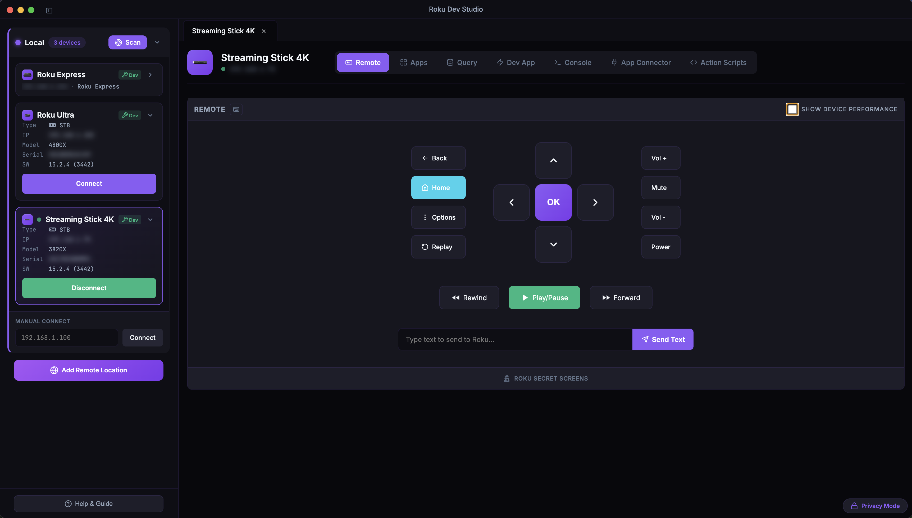
Device Performance
Remote Section
Live charts: On Remote, turn on Show Device Performance for a quad layout with CPU, memory, and object charts
When it applies: Reflects the running app when Developer Mode is on and your sideloaded dev channel is in the foreground
Settings → Device Performance: Tune chart sample interval and history window; optional "Remember Show Device Performance" per device
Action Scripts: Capture chart cards into run results — e.g. PNGs included in exported PDFs
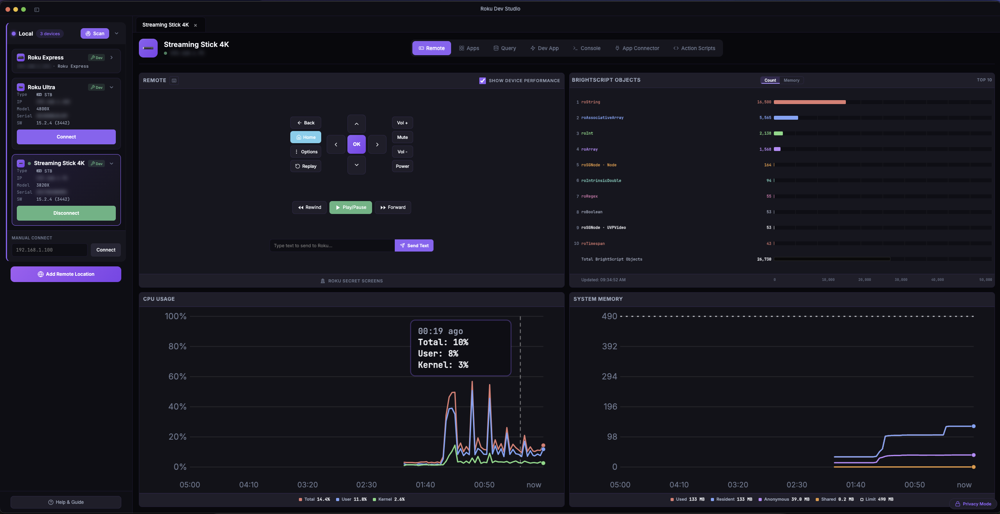
Device Discovery
Automatic SSDP Discovery: Automatically finds Roku devices on your local network
Subnet Scanning: Fallback discovery method when SSDP multicast is unavailable
Remote Device Discovery: Discover devices on remote networks via server bridge
Real-time Updates: Devices appear as they're discovered
App Launcher & Management
Installed Apps Browser: View and launch all apps installed on the device
App Icons: Display actual app icons loaded from the device in a grid layout
Custom App Launch: Launch any app by entering App ID
Deep-Linking: Launch apps with specific content (movies, shows, channels)
HDMI Inputs: Switch to HDMI inputs on TV devices
Remote Launch: Launch apps on remote devices via server
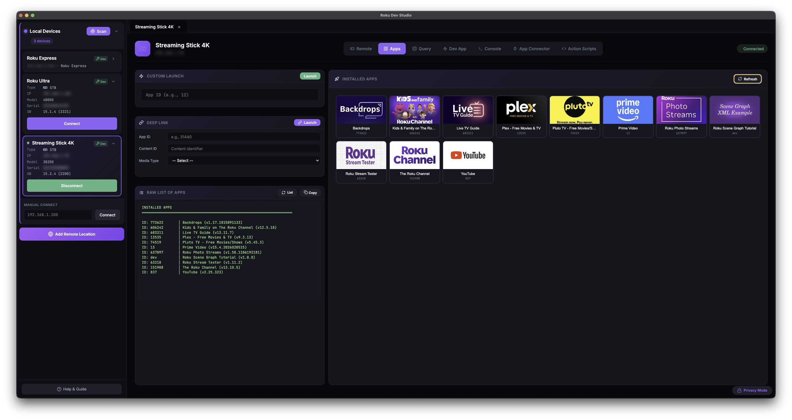
Device Queries
Device Info: Get device name, model, serial, software version, network info
All Apps: List all installed apps with details
Active App: Get currently running app information
Media Player: Query current media playback status
SceneGraph Nodes: Query all nodes or root nodes
SG Rendezvous: Get SceneGraph events and track/untrack
FW Beacons: Query firmware beacons
Plugins & Memory: Get plugin info and memory usage
System Commands: Execute system-level commands via telnet (port 8080)
Command History: View and re-run previous commands
Custom Queries: Run any custom ECP query endpoint
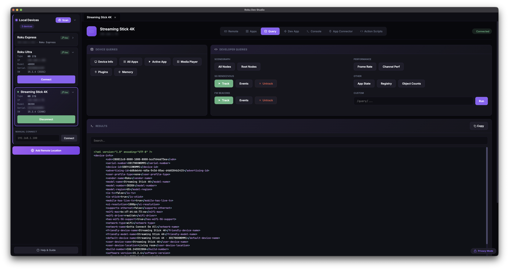
Dev App Management
Remote Sideloading: Upload and install dev channels to local or remote devices
Auto Screenshot: Automatically capture screenshots after keypresses, text input, and Dev App Launch
Launch Dev App: Launch sideloaded dev channel with one click
Dev App Status: View currently sideloaded app information
Progress Tracking: Real-time upload progress for sideloading
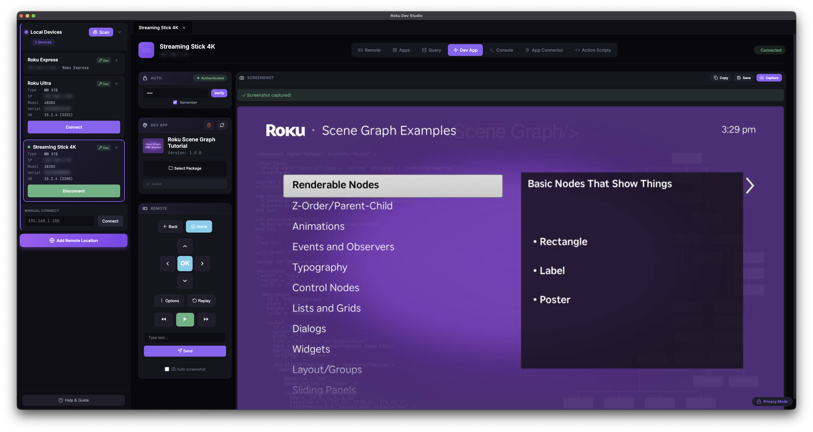
Sideload Relay
One build → many devices: With the relay on, Roku Dev Studio advertises itself as a Roku over SSDP; point your IDE (VS Code BrightScript / roku-deploy) or a browser at this machine, upload once, and RDS fans the build out (install → launch → console) to every targeted device — local or at a remote location
Enable in Settings → Sideload Relay (off by default): set a Relay Dev Password and pick targets in Setup Devices
Browser upload page: A themed drag-and-drop .zip uploader is served at the relay address for sideloads without an IDE
Auto-connect: Each device that receives a build opens as a connected tab with its debug console attached; live fan-out progress streams on telnet 8085
Source approval: A sideload from another machine prompts for allow / deny on the RDS host; remote browser uploads also require the Relay Dev Password
Console & Debugging
Telnet Console Access: Direct access to Roku console logs (port 8085)
Remote Console: Access console logs on remote devices via server
Real-time Output: See console log output in real-time
System Commands: Execute system commands via telnet (port 8080)
Log Export: Save console logs to file
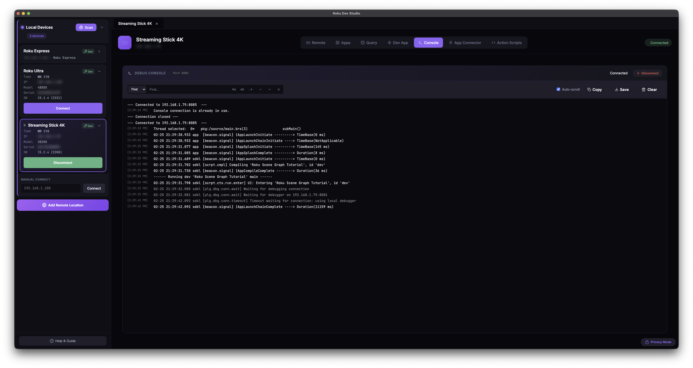
BrightScript Debugger
Socket debug protocol (port 8081): Attach to a dev channel sideloaded with debugging enabled; RDS re-sideloads with the protocol turned on if needed
Execution control: Attach / Detach, Continue, Pause, Step Over / In / Out, and Restart (re-sideload with debugging + reattach)
Breakpoints: Add / edit / remove, including conditional breakpoints (Roku OS 11.5+); STOPs already in the channel are discovered automatically
Threads & Call Stack, Variables, Watch: Inspect the call stack and live variables at a stop, and track watch expressions across stops
Lives in the Telnet Console sidebar: Toggle the debug sidebar from the Console tab; works on local and remote devices (server-capability-gated)
App Connector (using RALE)
RALE Connection: Connect to TrackerTask in your dev app (default port 49200)
Function Discovery: Auto-discover everything GetExternalControlFunctions exposes in your scene
Remote Execution: Execute any BrightScript function with parameters; positional functionParams array
Return Values: Get function return values in real-time
Update Node: After Get Node by ID, open the Update Node modal to selectNode, setField, or removeField on the matched node
RALE built-ins: Node lookup plus a full registry editor
Integration Guide modal: In-app TrackerTask tutorial with BrightScript snippets and a Save TrackerTask.xml button
Remote Function Calls: Works on local and remote devices via server
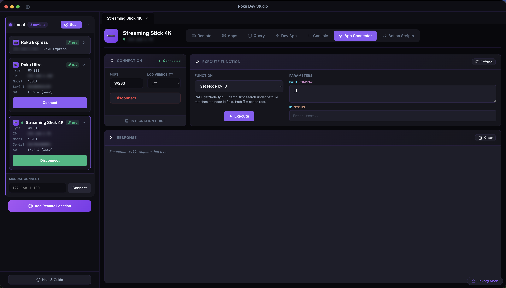
App Connector tab
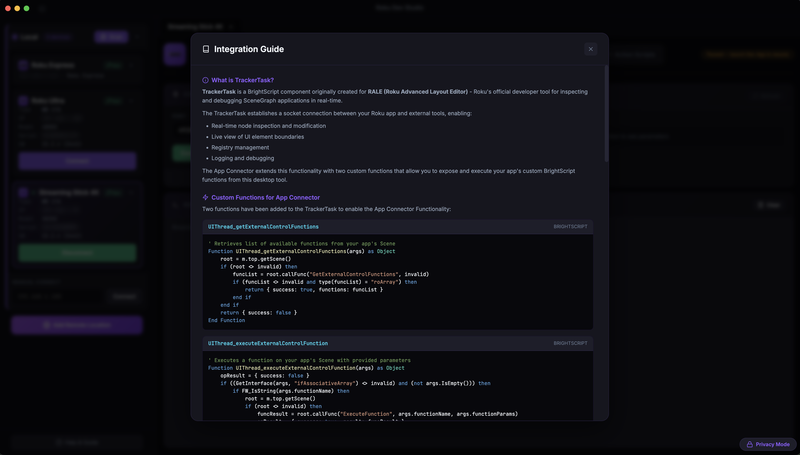
Integration Guide modal
Network Inspector
MITM proxy: A local proxy decrypts your dev channel's HTTPS so you can inspect full request / response headers and bodies — enable it in Settings → Network Inspector
Hotspot capture (optional): Records SNI / DNS metadata for all device traffic via OS packet capture (macOS BPF, Windows Npcap)
Session list & filters: Filter by host, method, status, type, kind, path (comma = OR), group by host, jump to errors
Inspect & export: View request/response overview, headers, and bodies; copy a body or export as cURL / HAR; save captured packets as .pcap
Traffic rules: Block, throttle, or mock responses per host / path
Variables (script v2): Set Variable step or assignToVar stores values; reference as ${name} in later steps
Conditionals (script v2): If / Else if / Else branches sourced from media-player state, active app, a RALE node field, or a stored variable
Wait conditions: Fixed delay, or wait until media-player state or a RALE node field condition is met
Script Executor: Import / paste / validate, run with pause / resume / stop, per-step skip, inline screenshots
PDF export: Run results — including screenshots and Device Performance chart cards — exportable as PDF
Headless / CLI: Same scripts run from the terminal via rds script run
Standalone window: File → View and Manage Action Scripts opens the Builder over your saved-scripts library independent of any connected device
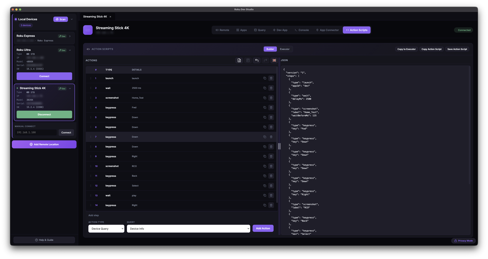
Builder
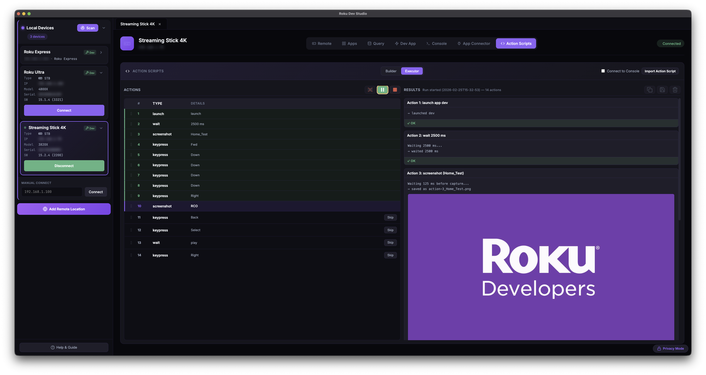
Executor
AI Agents (MCP Server)
Model Context Protocol: Bundled roku-dev-studio-mcp server lets Cursor, Claude Desktop, and VS Code drive a real Roku through this app while it's open
Settings → MCP Server: Toggle a client to add or remove its roku-dev-studio MCP entry
Two surfaces: Direct device ops for one-shot actions plus Action Scripts for multi-step / conditional flows that drop into the Builder for human review
Toasts on agent actions: Destructive ops surface a non-blocking toast so you always see what the agent did
Passwords stay local: Sideload / screenshot / delete-sideload reuse the password the device panel remembered — the agent never sends one
See the MCP package README for the tool catalog, bridge protocol, and design notes.
BrightScript Fiddle
Open Fiddle: File → Open Fiddle (Ctrl/Cmd+Shift+B) or the Open Fiddle button on the Query tab
Monaco + brighterscript: BrightScript editor with live linting; Run is disabled while errors are present
One-click run: Wraps your snippet into a minimal SceneGraph channel, sideloads it on the selected device, and streams the debug console into the Fiddle window
Auto-cleanup: Stop / window close removes the Fiddle channel from the device
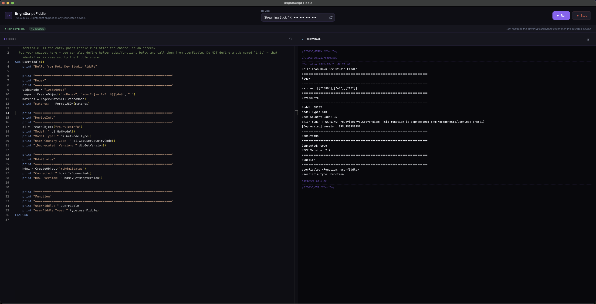
Fiddle window — Monaco editor + live debug console
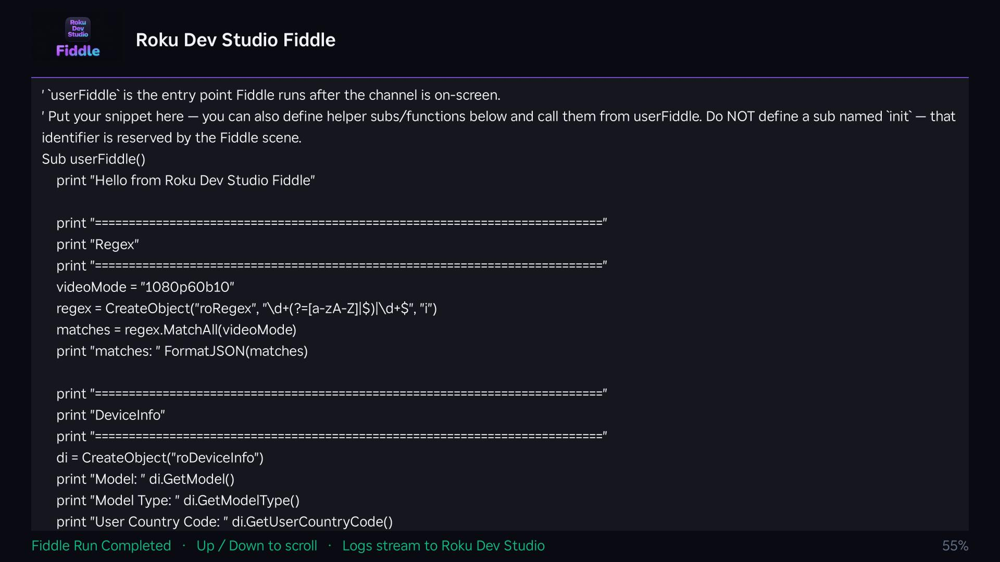
Same snippet running on the Roku
Log File Viewer
Open saved logs: File → Open Log File (Ctrl/Cmd+Shift+O) opens a dedicated window with the same find / structured-log / URL-detection chrome as the live Console tab
Static Channel Analysis
Wraps Roku's own sca-cmd: Runs Roku's static-analysis CLI against a packaged channel — RDS downloads the tool at runtime, never ships it
Results table: Cert Requirements chips link straight to the relevant section of Roku's certification / ad-requirements / Roku Pay docs; Documentation links open Roku's API reference
Terminal + Table tabs: Live raw tool output alongside a structured, filterable results table; View JSON / Save the full report
Requires Java 21+: RDS detects your Java install and reports version compatibility
File → Static Channel Analysis (Ctrl/Cmd+Shift+S)
rds CLI (terminal)
Ships with roku-dev-studio-api: rds discover, rds device info, rds keypress, rds launch, rds ecp query, rds sideload, rds screenshot, rds script validate / run, rds rale repl, rds appconnector connect — works direct over LAN or against a --relay server URL
Remote Server Support
Internet Bridge: Control Roku devices over the internet via remote server
Full ECP Proxy: Complete ECP protocol implementation through server
Device Discovery: Automatically discovers all Roku devices on remote network
All Features Supported: Remote control, queries, sideloading, console, and RALE work remotely
Swagger API: Interactive API documentation for remote server
General: Developer Mode, Privacy Mode (mask IPs/serials), Debug Logging to file, Roku Remote - Use Keyboard, Auto Connect to Devices, Auto Hide SideBar
Action Scripts: Default folder for run artifacts (screenshots, exported PDFs)
Device Performance: Chart sample interval, chart history window, "Remember Show Device Performance" per device
Timing & Network: Connection / query / telnet timeouts and other knobs
Network Inspector: Enable the local MITM proxy and hotspot packet capture
Sideload Relay: Advertise RDS as a Roku and fan one sideload out to many devices
MCP Server: Toggle roku-dev-studio in your AI client(s)
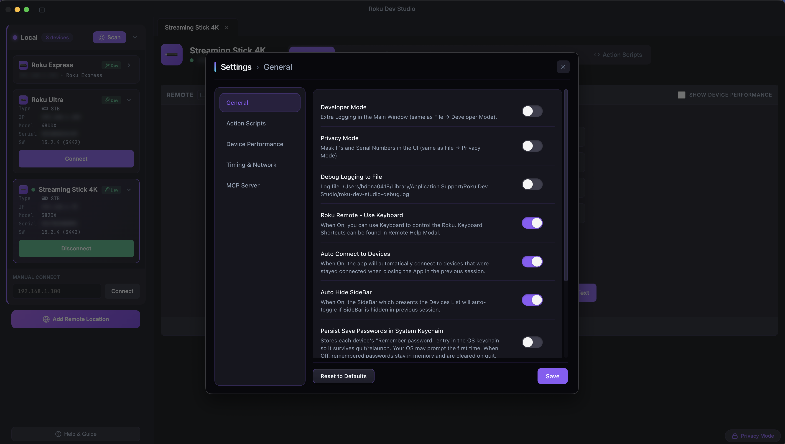
General
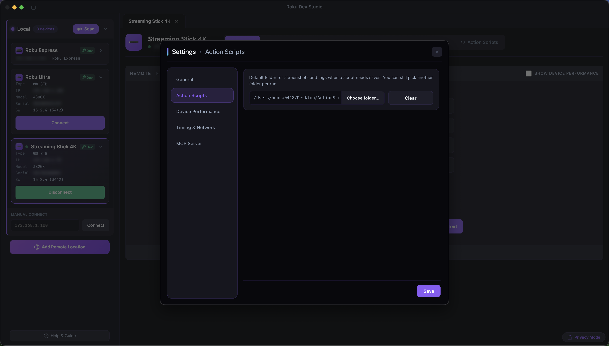
Action Scripts
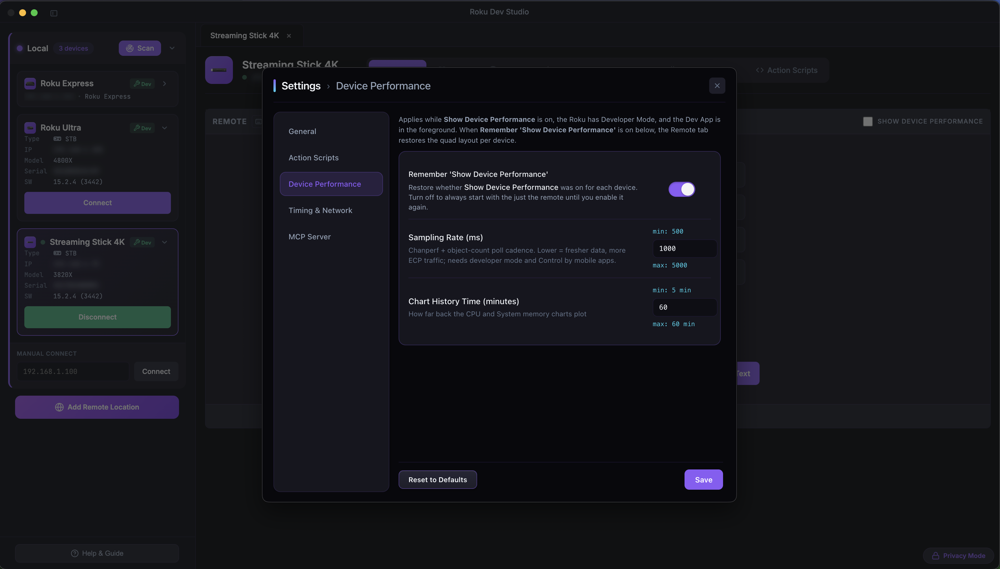
Device Performance
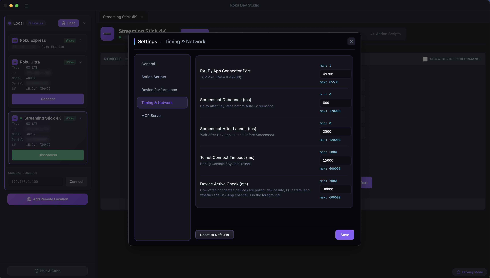
Timing & Network
Developer Features
Developer Mode: Enhanced debugging and development features (Ctrl/Cmd+Shift+D)
Privacy Mode: Mask IP addresses and serial numbers in UI (Ctrl/Cmd+Shift+P)
Debug Logging to file: Optional file-based debug logging in app userData (Ctrl/Cmd+Shift+L)
Encrypted dev-password storage: "Remember password" persists via Electron safeStorage — macOS Keychain, Windows DPAPI, secret-service, or kwallet
Settings persistence: Preferences and device connections saved between sessions
Quick Remote (Dev App tab): Compact remote strip plus drag-drop sideload right next to the screenshot pane
Secret Screens modal: One-click presets for Roku's hidden screens
TrackerTask Export: Save TrackerTask.xml from the App Connector → Integration Guide
Clear Cache and Reload: Wipe Chromium cache without restarting the app